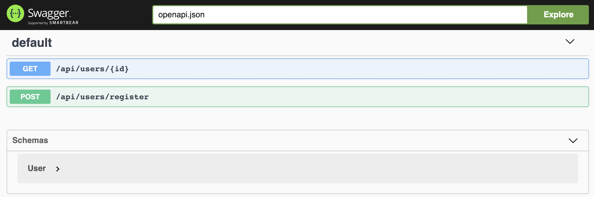
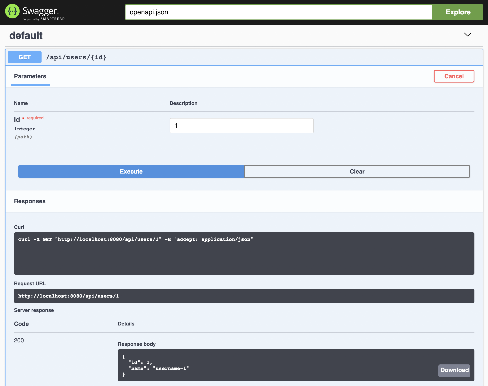

在 Dubbo 中使用 REST
什么是 REST
REST 是 Roy Thomas Fielding [1] 在 2000 年他的博士论文 [2] “架构风格以及基于网络的软件架构设计” 中提出来的一个概念。REST 是 REpresentational State Transfer 的缩写，翻译过来就是 “表现层状态转化”。REST 就是 Roy 在这篇论文中提出的面向互联网的软件所应当具备的架构风格。
按照 REpresentational State Transfer 的字面意思，可以把应用看成是一个虚拟的状态机，软件提供的不是服务而是一系列的资源，对这些资源的访问通过统一的操作来访问，而返回的结果代表了资源状态的一次跃迁。REST 是一种架构风格，如果一个软件架构符合 REST 风格，就可以称之为 RESTful 架构。这个架构应当具备以下一些设计上的约束：资源具有唯一标示、资源之间有关联关系、使用标准的方式来访问、资源有多种表现形式、无状态交互。
举例来说，一个简单的静态 HTML 页面的网站就很好的符合了 RESTful 架构风格。访问 http://acme.com/accounts 返回一个包含所有账号的页面，选取其中一个链接 http://acme.com/accounts/1 又会返回包含用户 1 的详细信息。爬虫软件在这种场景下工作的很好，当知道了某个网站的首页地址后，可以自举发现这个网站上所有关联的网页。更重要的是，这种访问形式不依赖网站提供的任何客户端，而是仅仅通过 HTTP 标准的访问方式完成的。可以说，HTML 这种超媒体文档的组织形式就是资源的表现层状态迁移的一种形式。
对于一个提供服务的动态网站来说，可以按照类似的思路将其 RESTful 化：
-
GET http://acme.com/accounts 返回所有账号信息
-
POST http://acme.com/accounts 创建一个新的账号
-
GET http://acme.com/accounts/1 返回账号 1 的信息
-
DELETE http://acme.com/accounts/1 删除账号 1
-
PUT http://acme.com/accounts/1 更新账号 1 信息
其中的思路是利用 HTTP 协议的标准方法 POST、DELETE、PUT、GET 来表达对于一个资源的增删改查 (CRUD) 操作，利用 URL 来表示一个资源的唯一标识。对资源访问的错误码也复用 HTTP 协议的状态码。返回结果通常由 json 或 XML 来表示，如果其中包换了对关联资源的访问方式 (所谓的表现层状态迁移) ，这种类型的 RESTful 应用可以进一步的称之为 hypermedia as the engine of application state (HATEOAS) 应用 [3]。

source: https://www.nginx.com/wp-content/uploads/2016/04/micro-image.png
{kind=link}
这里需要注意的是，按照 Roy 的定义，RESTful 架构风格与 HTTP 协议并没有什么强关联关系。但是，基于 HTTP 的 RESTful 架构风格是实现起来最自然，也是目前使用最广泛的一种实现，我们称之为 RESTful HTTP。同样的，在下文中将会专注在 HTTP 的场景下介绍如何在 Dubbo 框架中将服务暴露成 Restful 架构。
在 Dubbo 中使用 REST
背景
随着微服务的流行以及多语言互操作诉求日益增多，在 Dubbo 中暴露 REST 服务变成了一个不容忽视的诉求。为了在 Dubbo 中暴露 REST 服务，通常有两种做法，一种是直接依赖 Sprng REST 或者其他 REST 框架来直接暴露，另一种是通过 Dubbo 框架内置的 REST 能力暴露。两种做法各有优缺点，主要体现在前者与微服务体系中的服务发现组件能够更好的工作，而后者可以无缝的享受到 Dubbo 体系中的服务发现以及服务治理的能力。本文关注的是如何使用后者来暴露 REST 服务。
自 2.6.0 开始，Dubbo 合并了当当网捐献的 DubboX [4] 中的主要特性，其中就包括了基于 RESTeasy 3.0.19.Final 的 REST 支持，具备 JAXRS 2.0 规范中所有的能力。
基本用法
在以下的例子中，展示了如何通过最传统的 Spring XML 配置的方式来快速的暴露和调用一个 REST 服务。其中底层的 server 使用的是 netty，服务注册发现基于 Zookeeper。
注：本章节讨论的示例可以通过 https://github.com/beiwei30/dubbo-rest-samples/tree/master/basic 来获得
1. Maven 依赖
首先需要在项目中引入 dubbo all-in-one 的依赖以及 RESTEasy 相关的必要依赖。因为在本例中使用 Zookeeper 作为服务发现，还需要引入 Zookeeper client 相关的依赖。为了方便使用，第三方的依赖可以通过框架提供的 BOM 文件 dubbo-dependencies-bom 来引入。
<properties>
<dubbo.version>2.6.5</dubbo.version>
</properties>
<dependencyManagement>
<dependencies>
<dependency>
<groupId>com.alibaba</groupId>
<artifactId>dubbo-dependencies-bom</artifactId>
<version>${dubbo.version}</version>
<type>pom</type>
<scope>import</scope>
</dependency>
</dependencies>
</dependencyManagement>
<dependencies>
<dependency>
<groupId>com.alibaba</groupId>
<artifactId>dubbo</artifactId>
<version>${dubbo.version}</version>
</dependency>
<!-- REST support dependencies -->
<dependency>
<groupId>io.netty</groupId>
<artifactId>netty-all</artifactId>
</dependency>
<dependency>
<groupId>org.jboss.resteasy</groupId>
<artifactId>resteasy-jaxrs</artifactId>
</dependency>
<dependency>
<groupId>org.jboss.resteasy</groupId>
<artifactId>resteasy-client</artifactId>
</dependency>
<dependency>
<groupId>org.jboss.resteasy</groupId>
<artifactId>resteasy-netty4</artifactId>
</dependency>
<dependency>
<groupId>javax.validation</groupId>
<artifactId>validation-api</artifactId>
</dependency>
<dependency>
<groupId>org.jboss.resteasy</groupId>
<artifactId>resteasy-jackson-provider</artifactId>
</dependency>
<dependency>
<groupId>org.jboss.resteasy</groupId>
<artifactId>resteasy-jaxb-provider</artifactId>
</dependency>
<dependency>
<groupId>javax.servlet</groupId>
<artifactId>javax.servlet-api</artifactId>
</dependency>
<!-- zookeeper client dependency -->
<dependency>
<groupId>org.apache.curator</groupId>
<artifactId>curator-framework</artifactId>
</dependency>
</dependencies>
2. 定义服务接口
定义一个服务接口 UserService，该接口提供两个功能，一个是获取指定 User 的详细信息，另一个是新注册一个用户。
@Path("users") // #1
@Consumes({MediaType.APPLICATION_JSON, MediaType.TEXT_XML}) // #2
@Produces({MediaType.APPLICATION_JSON, MediaType.TEXT_XML})
public interface UserService {
@GET // #3
@Path("{id: \\d+}")
User getUser(@PathParam("id") Long id);
@POST // #4
@Path("register")
Long registerUser(User user);
}
通过在接口上用 JaxRS 标准的 annotation 来修饰，我们规定了该服务在 REST 下的访问形式：
@Path("users")定义了 UserService 通过 '/users' 来访问- 在类级别上定义
@Consumers和@Produces来规定参数以及返回值的类型为 XML 和 JSON。在类级别上定义之后，就可以不用在方法级别上进一步定义了 - getUser 方法上通过
@GET定义了接受的 HTTP 方法为 GET，通过@Path来规定参数是来自于 URL 中的 path。'GET /users/1' 等同于调用 'getUser(1)' - registerUser 方法上通过
@POST定义了接受的 HTTP 方法为 POST，通过将 JSON 或 XML 格式的 User 数据 POST 到 '/users/register' 上来创建一个 User
在 Dubbo 中，将 REST 相关的 annotation 定义在接口或者实现上都是可以的。这个在设计上是个权衡问题。Annotation 定义在实现类上可以保证接口的纯净，否则对于不需要通过 REST 方式调用的 Dubbo 调用方来说将需要强制依赖 JaxRS 的库，但是同时，对于需要通过 REST 方式调用的 Dubbo 调用方来说，就需要自己来处理 REST 调用相关的细节了。Annotation 定义在接口上，框架会自动处理掉 REST 调用相关的细节，并和 Dubbo 的服务发现以及服务治理功能能够很好的结合起来。在本例中采用了在接口上定义 JaxRS annotation 的形式。
3. 实现服务接口
为了简洁，这里给出的接口的实现只是简单的返回了接口需要的类型的示例，在真实的系统中，逻辑可能会比较复杂。
public class UserServiceImpl implements UserService {
private final AtomicLong id = new AtomicLong();
public User getUser(Long id) {
return new User(id, "username-" + id);
}
public Long registerUser(User user) {
return id.incrementAndGet();
}
}
4. 装配服务
如上所述，本例展示的是如何通过传统的 Spring XML 的方式来装配并暴露 Dubbo 服务。需要指出的是，这里展示了如何同时暴露两种不同的协议，一种是 REST，另一种是原生的 Dubbo 协议。
<?xml version="1.0" encoding="UTF-8"?>
<beans xmlns="http://www.springframework.org/schema/beans"
xmlns:xsi="http://www.w3.org/2001/XMLSchema-instance"
xmlns:dubbo="http://code.alibabatech.com/schema/dubbo"
xsi:schemaLocation="http://www.springframework.org/schema/beans http://www.springframework.org/schema/beans/spring-beans.xsd http://code.alibabatech.com/schema/dubbo http://code.alibabatech.com/schema/dubbo/dubbo.xsd">
<dubbo:application name="rest-provider"/> <!-- #1 -->
<dubbo:registry address="zookeeper://127.0.0.1:2181"/> <!-- #2 -->
<dubbo:protocol name="rest" port="8080" server="netty"/> <!-- #3 -->
<dubbo:protocol name="dubbo" server="netty4"/> <!-- #4 -->
<dubbo:service interface="org.apache.dubbo.samples.rest.api.UserService" protocol="rest,dubbo" ref="userService"/> <!-- #5 -->
<bean id="userService" class="org.apache.dubbo.samples.rest.impl.UserServiceImpl"/>
</beans> <!-- #6 -->
- 定义了该应用的名字为
rest-provider - 定义了服务注册通过 Zookeeper，并且 URL 为 "zookeeper://127.0.0.1:2181"
- 在端口 8080 上以 REST 方式暴露服务，底层的传输使用的是 netty
- 在默认端口 20880 上以原生 Dubbo 方式暴露服务，底层的传输方式是 netty
- 将 ‘userService' 的 Spring bean （也就是 UserServiceImpl）暴露为 UserService 服务，支持的协议既包括了 REST 也包括了 Dubbo
- 将 UserServiceImpl 注册成 'userService' 的 Spring bean
5. 服务提供方的启动类
简单的通过 ClassPathXmlApplicationContext 来加载刚刚配置的 Spring XML 配置 'rest-provider.xml' 即可启动 Dubbo 服务端
public class RestProvider {
public static void main(String[] args) throws IOException {
ClassPathXmlApplicationContext context = new ClassPathXmlApplicationContext("spring/rest-provider.xml");
context.start();
System.in.read();
}
}
6. 启动服务端
由于本例依赖 Zookeeper 做服务注册发现，在启动 RestProvider 之前，需要先启动一个 Zookeeper 服务器。之后就可以之间运行 RestProvider 了。通过以下的输出日志，我们可以知道 UserService 以两种方式对外暴露了同一个服务，其中：
- REST: rest://192.168.2.132:8080/org.apache.dubbo.samples.rest.api.UserService
- Dubbo: dubbo://192.168.2.132:20880/org.apache.dubbo.samples.rest.api.UserServic
...
[01/01/19 07:18:56:056 CST] main INFO config.AbstractConfig: [DUBBO] Export dubbo service org.apache.dubbo.samples.rest.api.UserService to url rest://192.168.2.132:8080/org.apache.dubbo.samples.rest.api.UserService?anyhost=true&application=rest-provider&bean.name=org.apache.dubbo.samples.rest.api.UserService&bind.ip=192.168.2.132&bind.port=8080&dubbo=2.0.2&generic=false&interface=org.apache.dubbo.samples.rest.api.UserService&methods=getUser,registerUser&pid=27386&server=netty&side=provider×tamp=1546341536194, dubbo version: 2.6.5, current host: 192.168.2.132
...
[01/01/19 07:18:57:057 CST] main INFO config.AbstractConfig: [DUBBO] Export dubbo service org.apache.dubbo.samples.rest.api.UserService to url dubbo://192.168.2.132:20880/org.apache.dubbo.samples.rest.api.UserService?anyhost=true&application=rest-provider&bean.name=org.apache.dubbo.samples.rest.api.UserService&bind.ip=192.168.2.132&bind.port=20880&dubbo=2.0.2&generic=false&interface=org.apache.dubbo.samples.rest.api.UserService&methods=getUser,registerUser&pid=27386&server=netty4&side=provider×tamp=1546341537392, dubbo version: 2.6.5, current host: 192.168.2.132
...
也可以通过 zkCli 访问 Zookeeper 服务器来验证。'/dubbo/org.apache.dubbo.samples.rest.api.UserService/providers' 路径下返回了一个数组 [dubbo://..., rest:.//...]。数组的第一个元素是 ’dubbo‘ 打头的，而第二个元素是 'rest' 打头的。
[zk: localhost:2181(CONNECTED) 10] ls /dubbo/org.apache.dubbo.samples.rest.api.UserService/providers
[dubbo%3A%2F%2F192.168.2.132%3A20880%2Forg.apache.dubbo.samples.rest.api.UserService%3Fanyhost%3Dtrue%26application%3Drest-provider%26bean.name%3Dorg.apache.dubbo.samples.rest.api.UserService%26dubbo%3D2.0.2%26generic%3Dfalse%26interface%3Dorg.apache.dubbo.samples.rest.api.UserService%26methods%3DgetUser%2CregisterUser%26pid%3D27386%26server%3Dnetty4%26side%3Dprovider%26timestamp%3D1546341537392, rest%3A%2F%2F192.168.2.132%3A8080%2Forg.apache.dubbo.samples.rest.api.UserService%3Fanyhost%3Dtrue%26application%3Drest-provider%26bean.name%3Dorg.apache.dubbo.samples.rest.api.UserService%26dubbo%3D2.0.2%26generic%3Dfalse%26interface%3Dorg.apache.dubbo.samples.rest.api.UserService%26methods%3DgetUser%2CregisterUser%26pid%3D27386%26server%3Dnetty%26side%3Dprovider%26timestamp%3D1546341536194]
可以简单的通过 'curl' 在命令行验证刚才暴露出来的 REST 服务：
$ curl http://localhost:8080/users/1
{"id":1,"name":"username-1"}
$ curl -X POST -H "Content-Type: application/json" -d '{"id":1,"name":"Larry Page"}' http://localhost:8080/users/register
1
7. 装配调用端
Dubbo 调用方只需要依赖服务的接口，通过以下方式装配好 Dubbo Consumer，即可发起调用。
<?xml version="1.0" encoding="UTF-8"?>
<beans xmlns="http://www.springframework.org/schema/beans"
xmlns:xsi="http://www.w3.org/2001/XMLSchema-instance"
xmlns:dubbo="http://code.alibabatech.com/schema/dubbo"
xsi:schemaLocation="http://www.springframework.org/schema/beans http://www.springframework.org/schema/beans/spring-beans.xsd http://code.alibabatech.com/schema/dubbo http://code.alibabatech.com/schema/dubbo/dubbo.xsd">
<dubbo:application name="rest-consumer"/>
<dubbo:registry address="zookeeper://127.0.0.1:2181"/>
<dubbo:reference id="userService" interface="org.apache.dubbo.samples.rest.api.UserService" protocol="rest"/> <!-- #1 -->
</beans>
- 'userService' 配置的 protocol 为 “rest"，将通过 REST 协议调用服务端
需要特别指出的是，这里显示的指定 protocol="rest" 在通常情况下不是必须的。这里需要显示指定的原因是我们例子中服务端同时暴露了多种协议，这里指定使用 rest 是为了确保调用方走 REST 协议。
8. 发起调用
简单的通过 ClassPathXmlApplicationContext 来加载刚刚配置的 Spring XML 配置 'rest-consumer.xml' 即可发起对 RestProvider 所提供的 UserService 的 REST 服务的调用。
public class RestConsumer {
public static void main(String[] args) {
ClassPathXmlApplicationContext context = new ClassPathXmlApplicationContext("spring/rest-consumer.xml");
context.start();
UserService userService = context.getBean("userService", UserService.class);
System.out.println(">>> " + userService.getUser(1L));
User user = new User(2L, "Larry Page");
System.out.println(">>> " + userService.registerUser(user));
}
}
这里分别展示了对 'getUser' 和 'registerUser' 的调用，输出结果如下：
>>> User{id=1, name='username-1'}
>>> 2
进阶
A. 在 REST 中使用 Annotation
在 Dubbo 中使用 annotation 而不是 Spring XML 来暴露和引用服务，对于 REST 协议来说并没有什么不同。有关如何使用 annotation 更详细的用法，请参阅《在 Dubbo 中使用注解》章节。这里主要展示一下与上面基于 Spring XML 配置的例子不同之处。
注：本章节讨论的示例可以通过 https://github.com/beiwei30/dubbo-rest-samples/tree/master/annotation 来获得
1. 使用 Java Configuration 来配置服务提供方的 protocol、registry、application
@Configuration
@EnableDubbo(scanBasePackages = "org.apache.dubbo.samples.rest.impl") // #1
static class ProviderConfiguration {
@Bean // #2
public ProtocolConfig protocolConfig() {
ProtocolConfig protocolConfig = new ProtocolConfig();
protocolConfig.setName("rest");
protocolConfig.setPort(8080);
protocolConfig.setServer("netty");
return protocolConfig;
}
@Bean // #3
public RegistryConfig registryConfig() {
RegistryConfig registryConfig = new RegistryConfig();
registryConfig.setProtocol("zookeeper");
registryConfig.setAddress("localhost");
registryConfig.setPort(2181);
return registryConfig;
}
@Bean
public ApplicationConfig applicationConfig() {
ApplicationConfig applicationConfig = new ApplicationConfig();
applicationConfig.setName("rest-provider");
return applicationConfig;
}
}
- 通过
@EnableDubbo来指定需要扫描 Dubbo 服务的包名，在本例中，UserServiceImpl 在 "org.apache.dubbo.samples.rest.impl" 下 - 通过提供一个 ProtocolConfig 的 Spring Bean 来指定服务提供方按照 REST 来暴露服务
- 通过提供一个 RegistryConfig 的 Spring Bean 来指定服务提供方所使用的服务注册机制
2. 使用 @Service 来申明 Dubbo 服务
@Service // #1
public class UserServiceImpl implements UserService {
...
}
- 简单的使用
@Service或者@Service(protocol = "rest")修饰 "UserServiceImpl" 来申明一个 Dubbo 服务，这里protocol = "rest"不是必须提供的，原因是通过 Java Configuration 只配置了一个 ProtocolConfig 的示例，在这种情况下，Dubbo 会自动装配该协议到服务中
3. 服务提供方启动类
通过使用 ProviderConfiguration 来初始化一个 AnnotationConfigApplicationContext 实例，就可以完全摆脱 Spring XML 的配置文件，完全借助 annotation 来装配好一个 Dubbo 的服务提供方。
public class RestProvider {
public static void main(String[] args) throws IOException {
AnnotationConfigApplicationContext context = new AnnotationConfigApplicationContext(ProviderConfiguration.class);
context.start();
System.in.read();
}
}
4. 使用 Java Configuration 来配置服务消费方的 registry、application
@Configuration
@EnableDubbo(scanBasePackages = "org.apache.dubbo.samples.rest.comp") // #1
@ComponentScan({"org.apache.dubbo.samples.rest.comp"}) // #2
static class ConsumerConfiguration {
@Bean // #3
public RegistryConfig registryConfig() {
RegistryConfig registryConfig = new RegistryConfig();
registryConfig.setProtocol("zookeeper");
registryConfig.setAddress("localhost");
registryConfig.setPort(2181);
return registryConfig;
}
@Bean
public ApplicationConfig applicationConfig() {
ApplicationConfig applicationConfig = new ApplicationConfig();
applicationConfig.setName("rest-consumer");
return applicationConfig;
}
}
- 通过
@EnableDubbo来指定需要扫描 Dubbo 服务引用@Reference的包名。在本例中，UserService 的引用在 "org.apache.dubbo.samples.rest.comp" 下 - 通过
@ComponentScan来指定需要扫描的 Spring Bean 的包名。在本例中，包含 UserService 引用的类 UserServiceComponent 本身需要是一个 Spring Bean，以方便调用，所以，这里指定的包名也是 "org.apache.dubbo.samples.rest.comp" - 通过提供一个 RegistryConfig 的 Spring Bean 来指定服务消费方所使用的服务发现机制
这里提到的 UserServiceComponent 的 Spring Bean 定义如下：
@Component
public class UserServiceComponent implements UserService { // #1
@Reference
private UserService userService;
@Override
public User getUser(Long id) {
return userService.getUser(id);
}
@Override
public Long registerUser(User user) {
return userService.registerUser(user);
}
}
- 这里比较好的实践是让这个 Spring Bean 也继承
UserService接口，这样在调用的时候也可以面向接口编程
5. 服务调用方启动类
通过使用 ConsumerConfiguration 来初始化一个 AnnotationConfigApplicationContext 实例，就可以完全摆脱 Spring XML 的配置文件，完全借助 annotation 来装配好一个 Dubbo 的服务消费方。然后就可以通过查找 UserServiceComponent 类型的 Spring Bean 来发起远程调用。
public class RestConsumer {
public static void main(String[] args) {
AnnotationConfigApplicationContext context = new AnnotationConfigApplicationContext(ConsumerConfiguration.class);
context.start();
UserService userService = context.getBean(UserServiceComponent.class);
System.out.println(">>> " + userService.getUser(1L));
User user = new User(2L, "Larry Page");
System.out.println(">>> " + userService.registerUser(user));
}
}
B. 让协议跑在不同的服务器上
目前 REST 协议在 Dubbo 中可以跑在五种不同的 server 上，分别是：
- "netty": 直接基于 netty 框架的 rest server，通过
<dubbo:protocol name="rest" server="netty"/>来配置 - "tomcat": 基于嵌入式 tomcat 的 rest server，通过
<dubbo:protocol name="rest" server="tomcat"/>来配置 - "jetty": 默认选项，基于嵌入式 jetty 的 rest server，通过
<dubbo:protocol name="rest" server="jetty"/>来配置 - "sunhttp": 使用 JDK 内置的 Sun HTTP server 作为 rest server，通过
<dubbo:protocol name="rest" server="sunhttp"/>来配置，仅推荐在开发环境中使用 - "servlet”: 采用外部应用服务器的 servlet 容器来做 rest server，这个时候，除了配置
<dubbo:protocol name="rest" server="servlet"/>之外，还需要在 web.xml 中做额外的配置
由于以上的例子展示了 "netty" 作为 rest server，下面演示一下使用嵌入式 tomcat 的 rest server 的用法。
注：本章节讨论的示例可以通过 https://github.com/beiwei30/dubbo-rest-samples/tree/master/tomcat 来获得
1. 增加 Tomcat 相关的依赖
<dependency>
<groupId>org.apache.tomcat.embed</groupId>
<artifactId>tomcat-embed-core</artifactId>
</dependency>
<dependency>
<groupId>org.apache.tomcat.embed</groupId>
<artifactId>tomcat-embed-logging-juli</artifactId>
</dependency>
2. 配置 protocol 使用 tomcat 作为 REST server
<dubbo:protocol name="rest" port="8080" server="tomcat"/>
启动服务提供方之后，在以下的输出将会出现与嵌入式 Tomcat 相关的日志信息：
Jan 01, 2019 10:15:12 PM org.apache.catalina.core.StandardContext setPath
WARNING: A context path must either be an empty string or start with a '/' and do not end with a '/'. The path [/] does not meet these criteria and has been changed to []
Jan 01, 2019 10:15:13 PM org.apache.coyote.AbstractProtocol init
INFO: Initializing ProtocolHandler ["http-nio-8080"]
Jan 01, 2019 10:15:13 PM org.apache.tomcat.util.net.NioSelectorPool getSharedSelector
INFO: Using a shared selector for servlet write/read
Jan 01, 2019 10:15:13 PM org.apache.catalina.core.StandardService startInternal
INFO: Starting service [Tomcat]
Jan 01, 2019 10:15:13 PM org.apache.catalina.core.StandardEngine startInternal
INFO: Starting Servlet Engine: Apache Tomcat/8.5.31
Jan 01, 2019 10:15:13 PM org.apache.coyote.AbstractProtocol start
INFO: Starting ProtocolHandler ["http-nio-8080"]
C. 使用外部的 Servlet 容器
进一步的，还可以使用外部的 servlet 容器来启动 Dubbo 的 REST 服务。
注：本章节讨论的示例可以通过 https://github.com/beiwei30/dubbo-rest-samples/tree/master/servlet 来获得
1. 修改 pom.xml 改变打包方式
因为使用的是外部的 servlet 容器，需要将打包方式修改为 "war"
<packaging>war</packaging>
2. 修改 rest-provider.xml
配置 "server" 为 "servlet" 表示将使用外部的 servlet 容器。并配置 "contextpath" 为 ""，原因是在使用外部 servlet 容器时，Dubbo 的 REST 支持需要知道被托管的 webapp 的 contextpath 是什么。这里我们计划通过 root context path 来部署应用，所以配置其为 ""。
<dubbo:protocol name="rest" port="8080" server="servlet" contextpath=""/>
3. 配置 WEB-INF/web.xml
<?xml version="1.0" encoding="UTF-8"?>
<web-app xmlns="http://xmlns.jcp.org/xml/ns/javaee"
xmlns:xsi="http://www.w3.org/2001/XMLSchema-instance"
xsi:schemaLocation="http://xmlns.jcp.org/xml/ns/javaee http://xmlns.jcp.org/xml/ns/javaee/web-app_3_1.xsd"
version="3.1">
<context-param> <!-- #1 -->
<param-name>contextConfigLocation</param-name>
<param-value>/WEB-INF/classes/spring/rest-provider.xml</param-value>
</context-param>
<listener>
<listener-class>com.alibaba.dubbo.remoting.http.servlet.BootstrapListener</listener-class>
</listener>
<listener>
<listener-class>org.springframework.web.context.ContextLoaderListener</listener-class>
</listener>
<servlet> <!-- #2 -->
<servlet-name>dispatcher</servlet-name>
<servlet-class>com.alibaba.dubbo.remoting.http.servlet.DispatcherServlet</servlet-class>
<load-on-startup>1</load-on-startup>
</servlet>
<servlet-mapping>
<servlet-name>dispatcher</servlet-name>
<url-pattern>/api/*</url-pattern>
</servlet-mapping>
- 配置 Dubbo 和 Spring 相关的 ContextListener，打开 Dubbo HTTP 支持，以及通过 rest-provider.xml 来装配 Dubbo 服务
- 配置 Dubbo HTTP 所需的 DiapatcherServlet
这样做之后，不再需要 RestProvider 来启动 Dubbo 服务，可以将其从工程中删掉。对应的，现在 Dubbo 的服务将会随着 Servlet 容器的启动而启动。启动完毕之后，可以通过类似 "http://localhost:8080/api/users/1" 来访问暴露出的 REST 服务。需要注意的是，这个例子里假定了服务提供方的 WAR 包部署在 root context path 上，所以当该应用通过 IDE 配置的 tomcat server 启动时，需要指定 Application Context 为 "/"。
D. 增加 Swagger 支持
在上面使用外部 Servlet 容器的例子的基础上，讨论如何暴露 Swagger OpenApi 以及如何继承 Swagger UI。
注：本章节讨论的示例可以通过 https://github.com/beiwei30/dubbo-rest-samples/tree/master/servlet 来获得
1. 暴露 Swagger OpenApi
增加 swagger 相关依赖，以便通过 "http://localhost:8080/openapi.json" 来访问 REST 服务的描述
<properties>
<swagger.version>2.0.6</swagger.version>
</properties>
<dependencies>
<dependency>
<groupId>io.swagger.core.v3</groupId>
<artifactId>swagger-jaxrs2</artifactId>
<version>${swagger.version}</version>
</dependency>
<dependency>
<groupId>io.swagger.core.v3</groupId>
<artifactId>swagger-jaxrs2-servlet-initializer</artifactId>
<version>${swagger.version}</version>
</dependency>
</dependencies>
修改 WEB-INF/web.xml，增加 openapi servlet 的配置
<web-app>
...
<servlet> <!-- #3 -->
<servlet-name>openapi</servlet-name>
<servlet-class>io.swagger.v3.jaxrs2.integration.OpenApiServlet</servlet-class>
</servlet>
<servlet-mapping>
<servlet-name>openapi</servlet-name>
<url-pattern>/openapi.json</url-pattern>
<url-pattern>/openapi.yaml</url-pattern>
</servlet-mapping>
</web-app>
重新启动应用之后，可以通过访问 "http://localhost:8080/openapi.json" 或者 "http://localhost:8080/openapi.yaml" 来访问暴露出的 openapi 的契约，以下是 yaml 格式的表述：
openapi: 3.0.1
paths:
/api/users/{id}:
get:
operationId: getUser
parameters:
- name: id
in: path
required: true
schema:
type: integer
format: int64
responses:
default:
description: default response
content:
application/json:
schema:
$ref: '#/components/schemas/User'
text/xml:
schema:
$ref: '#/components/schemas/User'
/api/users/register:
post:
operationId: registerUser
requestBody:
description: a user to register
content:
application/json:
schema:
$ref: '#/components/schemas/User'
text/xml:
schema:
$ref: '#/components/schemas/User'
responses:
default:
description: default response
content:
application/json:
schema:
type: integer
format: int64
text/xml:
schema:
type: integer
format: int64
components:
schemas:
User:
type: object
properties:
id:
type: integer
format: int64
name:
type: string
2. 集成 Swagger UI
在 pom.xml 中继续增加 swagger-ui 的依赖，这里使用的是 webjars 的版本，从集成的角度来说更加简洁。webjars 的工作机制可以参阅 webjars 官网 [5]
<properties>
<swagger.webjar.version>3.20.3</swagger.webjar.version>
</properties>
<dependencies>
<dependency>
<groupId>org.webjars</groupId>
<artifactId>swagger-ui</artifactId>
<version>${swagger.webjar.version}</version>
</dependency>
</dependencies>
在工程的 webapp/WEB-INF 根目录下增加一个 HTML 文件，内容如下。HTML 文件名可以为任何名字，没有硬性要求，如果该文件被命名为 "swagger-ui.html"，那么你可以通过访问 “http://localhost:8080/swagger-ui.html" 来访问 swagger UI。本例为了演示方便起见，将其命名为 "index.html"，这样当访问 "http://localhost:8080" 时，就可以很方便的得到 swagger UI 的页面。
<!DOCTYPE html>
<html lang="en">
<head>
<meta charset="UTF-8">
<title>API UI</title>
<link rel="stylesheet" type="text/css" href="webjars/swagger-ui/3.20.3/swagger-ui.css" >
<link rel="icon" type="image/png" href="webjars/swagger-ui/3.20.3/favicon-32x32.png" sizes="32x32" />
<link rel="icon" type="image/png" href="webjars/swagger-ui/3.20.3/favicon-16x16.png" sizes="16x16" />
<style>
html
{
box-sizing: border-box;
overflow: -moz-scrollbars-vertical;
overflow-y: scroll;
}
*,
*:before,
*:after
{
box-sizing: inherit;
}
body
{
margin:0;
background: #fafafa;
}
</style>
</head>
<body>
<div id="swagger-ui"></div>
<script src="webjars/swagger-ui/3.20.3/swagger-ui-bundle.js"> </script>
<script src="webjars/swagger-ui/3.20.3/swagger-ui-standalone-preset.js"> </script>
<script>
window.onload = function () {
window.ui = SwaggerUIBundle({
url: "openapi.json",
dom_id: '#swagger-ui',
deepLinking: true,
presets: [
SwaggerUIBundle.presets.apis,
SwaggerUIStandalonePreset
],
plugins: [
SwaggerUIBundle.plugins.DownloadUrl
],
layout: "StandaloneLayout"
});
};
</script>
</body>
</html>
再次重启服务器，并访问 "http://localhost:8080" 时，将会看到 swagger UI 页面的展示：

通过 Swagger UI 可以很方便的浏览当前服务器提供的 REST 服务的文档信息，甚至可以直接调用来做服务测试。以 '/api/users/{id}' 为例，测试结果如下图所示：

总结
本文主要关注了在 Dubbo 中支持 REST 协议的情况。首先探索了 REST 概念的起源，澄清了 REST 是一种适合互联网的软件架构风格，进一步的说明了 REST 风格的架构可以与 HTTP 协议无关，但是 HTTP 协议的确是 REST 风格架构的最常用甚至是最佳的组合和搭档。然后讨论了如何在 Dubbo 中开发 REST HTTP 的几种典型用法，其中包括了通过不同的配置，如传统的 Spring XML，完全通过 annotation 来配置两种典型的用法，本文中没有涉及到的还有纯 API 编程方式，Spring Boot 配置方式也是完全可以的，因为篇幅原因没有提及；还讨论了如何通过不同的 REST server 来暴露 REST HTTP 服务，包括了 embedded tomcat，netty，以及外置的 servlet 容器等几种用法。最后，在外置的 servlet 容器的基础上，进一步的讨论了如何通过 Swagger 暴露 openAPI 以及集成 Swagger UI 的方法。
本文没有涉及的内容包含但不限于国际化支持、Dubbo REST 更高阶的注入扩展的用法、以及 Dubbo REST 支持未来的规划。其中 Dubbo REST 扩展的支持可以参考 https://github.com/beiwei30/dubbo-rest-samples/tree/master/extensions 中的演示。以后有机会会开专门的篇幅来探讨更高级的 Swagger 的支持、以及对未来的展望。